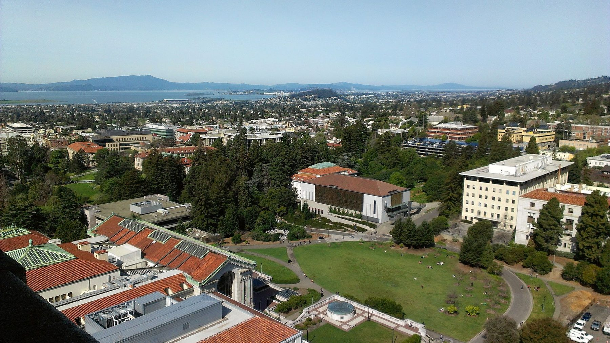

February 4–5, 2027 · UC Berkeley
Attend
Registration, important dates, the call for posters, the build workshop application, and travel information.
Registration
Pre-register for 2027
Full registration opens in fall 2026. Pre-register now to receive the registration link, the call for posters, the build workshop application, and the final program as they are released.
Attendance is free. Registration is required for planning purposes, and places are limited by venue capacity. Pre-registering carries no obligation to attend.
| Registration type | Fee |
|---|---|
| Friday symposium, in person (includes lunch and reception) | Free |
| Friday symposium, virtual | Free |
| Thursday OpenCAL build workshop (by application; includes kit) | Announced with call |
| Optional group dinner, Friday evening | Self-funded |
Important dates
Key deadlines
Dates other than the symposium itself are provisional and will be confirmed when registration opens.
Fall 2026
Registration and call for posters open
Fall 2026
Build workshop applications open
December 2026
Build workshop applications close
Early January 2027
Workshop teams notified
February 4, 2027
OpenCAL build workshop
February 5, 2027
Symposium
Call for posters
Poster session
The poster session is the primary venue for students, postdoctoral researchers, and early-career scientists to present work at the symposium.
Posters are displayed throughout the Friday symposium, with an attended session during the catered lunch. Work in progress, hardware builds, software tools, and materials research are all welcome, as are negative results.
Poster topics
Submissions are welcome under any of the symposium topic areas:
- Light engines and holography
- Projection computation and inverse design
- Photochemistry and resin design
- Process monitoring, metrology, and control
- Scale, throughput, and production
- Materials beyond acrylates
- Biofabrication
- Open hardware, reproducibility, and education
Submission guidelines
- Abstract of approximately 250 words, submitted through the registration form when it opens.
- Portrait orientation, up to 36 × 48 inches (A0 also fits).
- Submission deadline announced with registration in fall 2026.
Live demonstrations
Bench space and power can usually be provided next to the poster boards for hardware demonstrations. Indicate in the pre-registration form if you plan to bring equipment.
Day 1
Build workshop application
Between five and ten teams will assemble an OpenCAL volumetric printer in the CITRIS Invention Lab on Thursday, February 4 and take it home. Because kits are subsidized and limited, places are allocated by application.
Eligibility
Who should apply
Teams of two to four from a research group, teaching laboratory, or makerspace, with a location for the printer and a person responsible for its continued use.
Application
What to submit
A brief statement of one to three paragraphs describing the team, intended applications, and how the printer will be used after the workshop.
Timeline
Key dates
Applications open with registration in fall 2026 and close in December. Teams are notified in early January 2027.
Students and early-career researchers
Student participation
Students and postdoctoral researchers are a core part of the symposium audience, and the poster session is designed for them.
The organizers are seeking funding for limited travel support for student presenters, with priority for those presenting a poster or joining a build workshop team. If travel support would make your attendance possible, say so in the comments field when you pre-register; details will follow with registration.
Students may also apply for the Thursday build workshop as part of a team from their laboratory or makerspace.
Confirmation letters
Students who need a letter for their institution or funder confirming participation can request one from the organizers after registering.
Practical information
Before you travel
Invitation letters for visas
Registered participants who require a letter of invitation to support a visa application can request one from the organizers. Allow several weeks for visa processing; letters confirm participation only and do not cover expenses.
Accommodation
There is no reserved room block. Hotels within walking distance of campus include the Graduate Berkeley, Hotel Shattuck Plaza, and the Residence Inn Berkeley. Early booking is recommended because of concurrent conferences in the Bay Area.
Meals and dietary requirements
Lunch, coffee breaks, and the Friday evening reception are provided. Note dietary requirements in the comments field when you pre-register so that catering can accommodate them.
Photography and recording
Sessions may be photographed and, with speaker permission, recorded for the symposium archive. Participants who do not wish to appear in photographs should inform the registration desk on arrival.
Venue and travel
Getting to UC Berkeley
The symposium is held on the University of California, Berkeley campus, across the Bay from San Francisco.

Venue
Symposium (Friday, February 5): The Gateway, Room 5340. The Gateway is UC Berkeley’s new home for the College of Computing, Data Science, and Society, on Hearst Avenue at the north edge of campus.
Build workshop (Thursday, February 4): CITRIS Invention Lab, Sutardja Dai Hall, 2594 Hearst Avenue, a few minutes’ walk from The Gateway.
Registered participants receive a campus map and accessibility information before the event. The 2025 symposium was held in the Sequoia Room, Helen Diller Anchor House.
Public transit
Downtown Berkeley BART station is a short walk from campus, with direct service from Embarcadero, Montgomery, Powell, and Civic Center stations in San Francisco. Travel time from downtown San Francisco is approximately 40 minutes.
Airports
Oakland International (OAK) is closest to Berkeley. San Francisco International (SFO) connects directly to BART. San Jose International (SJC) is a third option with a longer transfer.
Accessibility
The venue is wheelchair accessible. Please note any accessibility requirements in the pre-registration form or contact the organizers so that arrangements can be made in advance.
SPIE Photonics West
The symposium is scheduled adjacent to Photonics West at Moscone Center. BART runs from Powell Street station, two blocks from Moscone, directly to Downtown Berkeley.
Program suggestions
Suggest a speaker or session
The 2027 program is in development, and the organizers welcome input from the community.
Suggestions are particularly welcome for speakers from disciplines adjacent to volumetric printing, including open-source hardware, photonics, display engineering, semiconductor lithography, and computational microscopy, and from groups that have built and operated a VAM printer. Self-nominations are accepted.
Use the comments field on the pre-registration form, or email the organizers.
Sponsorship
Registration is free because catering, poster boards, and build kits are underwritten by sponsors. Organizations interested in supporting the 2027 symposium, and in particular the subsidized OpenCAL build kits, are invited to contact the organizers.
Sponsorship inquiries →Code of conduct
Expectations for participants
The VAM Symposium is a professional meeting. All participants, including speakers, sponsors, organizers, and volunteers, are expected to contribute to a respectful and productive environment.
- Scope. This code applies at all symposium activities: sessions, the poster session, the build workshop, the reception and dinner, and online channels including the virtual stream.
- Respect. Harassment, discrimination, intimidation, and unwelcome attention of any kind are not tolerated, including on the basis of gender, gender identity, sexual orientation, disability, appearance, race, ethnicity, religion, age, nationality, or career stage.
- Discussion. Vigorous scientific disagreement is welcome; personal attacks are not. Presenters should be allowed to finish before being questioned, and questions should be brief.
- Unpublished work. Posters and talks may contain unpublished results. Do not photograph or share slides or posters without the presenter’s permission.
- Laboratory safety. The build workshop involves photopolymer resins, solvents, and high-intensity light sources. Follow facilitator instructions, wear the eye protection and gloves provided, and do not look into the projection path.
- Reporting. Concerns can be raised in person with any member of the organizing committee, or by email to twaddell@berkeley.edu. Reports are handled confidentially. The organizers may ask anyone who violates this code to leave.
UC Berkeley policies on nondiscrimination and harassment apply on campus and take precedence where they differ from this code.
Contact
Questions?
For questions about registration, posters, the build workshop, invitation letters, or sponsorship, email the organizing committee at twaddell@berkeley.edu.